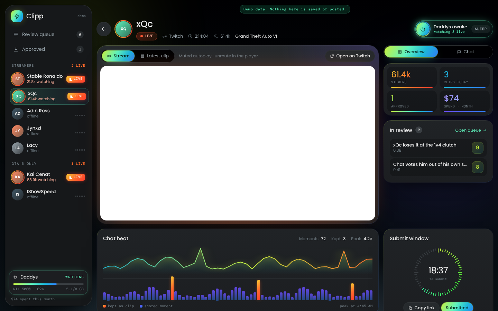
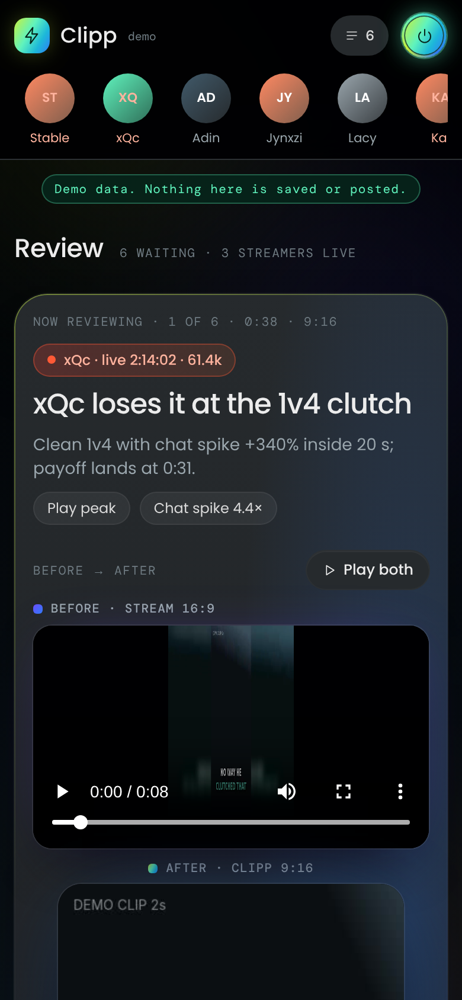

4 · Dashboard · demo mode, sample data
Daily panels, a live page per streamer, and the phone
 123
456
123
456Below the review card (same page, 1440×1700 capture, cropped).
- Approve streak. Clips and approvals per day; today highlighted.
- 7-day numbers. Approved, approval rate, average score.
- Pipeline tiles. Watching, Transcribing, Judging, Rendering, from the heartbeat. They run at the same time.
- Content Rewards countdown. 30 min after posting; Copy / Open, then Submitted (D025).
- Spend meter. Month total vs budget, split Grok / other.
- Approved. "Ready on phone"; Save downloads
streamer-title.mp4.
Finding: the meter's budget is
BUDGET = 100 in dashboard/app/(app)/page.tsx, but D012's ceiling is $250/month. It will look over budget early. verified in code
1234567Live page for xQc (/live/xqc).
- Header. Platform, time live, viewers, game.
- Stream / Latest clip. Muted official player, or the newest clip.
- Blank player: the Twitch embed cannot load in this offline sandbox. unverified
- Tiles. Viewers, clips today, approved, month spend.
- In review. This streamer's queued clips.
- Chat heat. Line = chat rate; bars = scored moments; orange = kept.
- Submit window. The 30-min countdown for this streamer.

1234Phone, 390 px.
- Avatar strip replaces the rail.
- Queue count.
- Wake switch.
- Same review card, stacked; actions pin to the bottom.
Clipp · project overview7 / 12